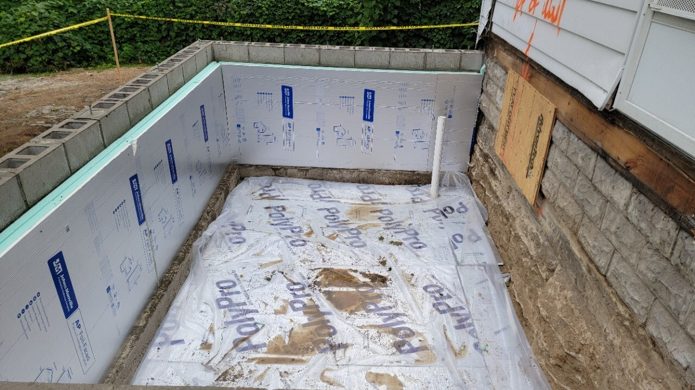
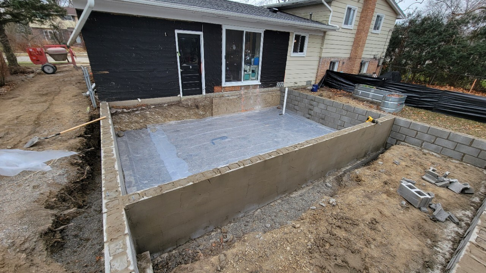
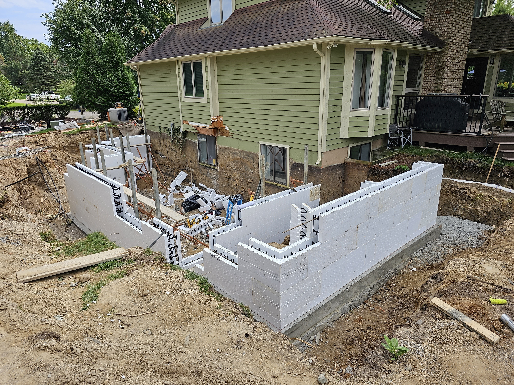

Foundations
Foundations are typically masonry blocks or cast concrete in different types of formwork. They form the walls of a crawl space or basement and extend up from the footing to the part of the building that reaches above grade.
Overview
Some examples like a Superior Wall are cast off site, delivered, and craned into place. Sometimes the foundation extends above grade as well—this tends to be more common with Superior Wall and ICF. It is also possible to build foundations in other ways, like a permanent wood foundation which is built by carefully waterproofing pressure treated wood with drainage to keep it dry below grade.
Process
-
Confirm prerequisites and coordination items
- Footings must be in place before you can build foundations
- Choose window wells and egress windows before layout starts
- Locate the sump pump outlet
- Confirm exterior drains and downspout locations and any underground drain design
- Locate exterior outlets that need foundation penetrations or sleeves
- Determine if you need a brick ledge
-
Establish the top of wall elevation
- For an addition, match the height where your floor will pass through from old to new
- Sometimes the existing floor is out of level, decide what you are matching before work starts
-
Establish the outside perimeter of the foundation (chalk or string lines)
- Help square the foundation up before the masons arrive
- Confirm elevations again after layout, before wall construction
-
Locate and mark penetrations and openings
- Dryers
- Outlets
- Hose bibs
- Scuttles
- Windows
- Egress openings
- Sump outlets
- Draw window and penetration openings on the footings so the crew knows where to locate them in the foundation wall
- Consider laminating the foundation plan for the crew to keep it clean and easy to read
-
Stage critical items (minimal list)
- Layout/verification: levels, string lines/blocks, laser or transit
- Typical install tools (depends on system): chisels, brick hammer, drills, trowels, concrete saw, concrete mixer
- Typical materials (depends on system): wall system (block/forms/panels), mortar, rebar, hold-downs/anchor hardware, window wells/windows, insulation foam
-
Build or pour the foundation
- Install reinforcement as designed
- Grout cores in block walls as designed
-
Help the masons locate J-bolts / hold-downs based on how the framers will lay out plates
- Bolts for plates should be every 6’ and within 1’ of corners and splices
- Bolts should be at least 7” into block and 2” above block
-
Waterproof the outside of the foundation
- Parging and tar is common, or install a product like Mel-Roll
- This work is commonly verified at the backfill inspection, do not backfill early
-
Install insulation (coordinate with your overall thermal and ignition-barrier strategy)
- Exterior foundation insulation: EPS foam is waterproof and can be used below grade
- Interior insulation is often used when you will be using cavity insulation in the framed part of the building, because you can keep it more continuous through the rim joist area, but foam board must have an ignition barrier
- Use an ASTM E84 approved product for flame spread and smoke development (example: JM AP Foil Faced)
Inspection
- Backfill inspection: Looks for proper parge coat and waterproofing and must be completed before backfilling
- Compaction / slab prep inspection: Looks for 4” compacted base and 6+ mil poly sheeting before pouring concrete for a crawl/basement floor (poly helps prevent vapor and radon intrusion) This may also include radon prep, drainage, and in some cases insulation before the slab
Common issues and how to avoid them
- Top-of-wall elevation errors: Confirm what you’re matching (existing floor can be out of level) before layout
- Out-of-square layout: Square and verify before the crew starts building walls
- Missed penetrations: Mark dryers/vents/outlets/hose bibs/windows/egress/sump discharge on the footings and plan set
- Misplaced anchors: Coordinate J-bolts/hold-downs with the framing plan before embed
- Waterproofing discovered after backfill: Schedule and pass the backfill inspection before covering work
- Insulation/ignition barrier conflicts: Decide exterior vs interior strategy early and confirm required protection
Types of foundations
Block (CMU) foundations
CMU foundations are common for crawl spaces and basements and are often paired with specified vertical/horizontal reinforcement and grouted cells. They can be very adaptable for remodel work, but openings, embed locations, and grout/rebar scope must be coordinated up front.
Poured concrete foundations
Cast-in-place concrete walls are formed and poured on site, typically with a defined reinforcement schedule and specific requirements for penetrations and embeds. They are fast once forming is staged, but late changes (like a missed sleeve or anchor line) can turn into sawcut/patch work.
Precast panel systems (example: Superior Wall)
Precast foundation panels are manufactured off-site and delivered to be set with a crane, which can shorten the schedule and reduce weather exposure. Many systems integrate insulation and chases, but they require accurate layout and good coordination for crane access and site logistics.
ICF (insulated concrete forms)
ICF walls use foam forms that remain in place and provide continuous insulation while the concrete core provides structure. They often extend above grade and can perform well thermally, but bracing, straightness, and pour strategy matter to prevent blowouts or waves.
Permanent wood foundations
Permanent wood foundations use pressure-treated framing and sheathing below grade and rely on robust drainage and waterproofing details to stay dry. They are less common in many markets, so inspectors, designers, and trades may need extra coordination and clear documentation.




Resources
- Foundation Checklist
- 2015 Michigan Residential Code – Chapter 4 Foundations
- 2024 International Residential Code – Chapter 4 Foundations
Last revised 01/01/2026